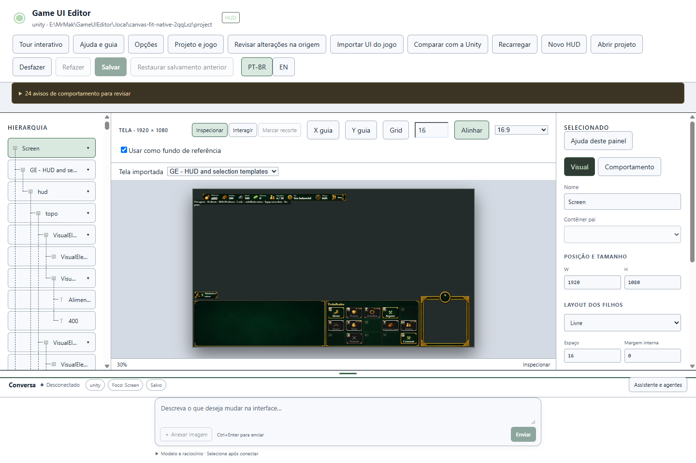
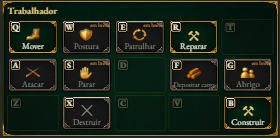
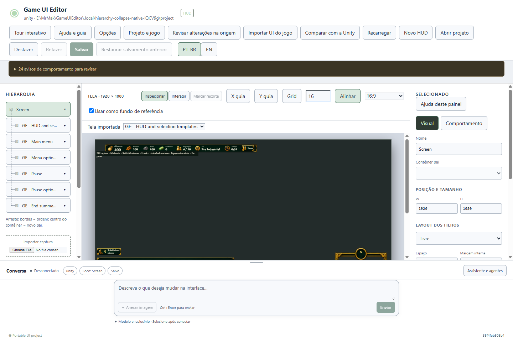
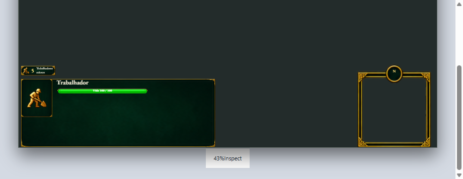
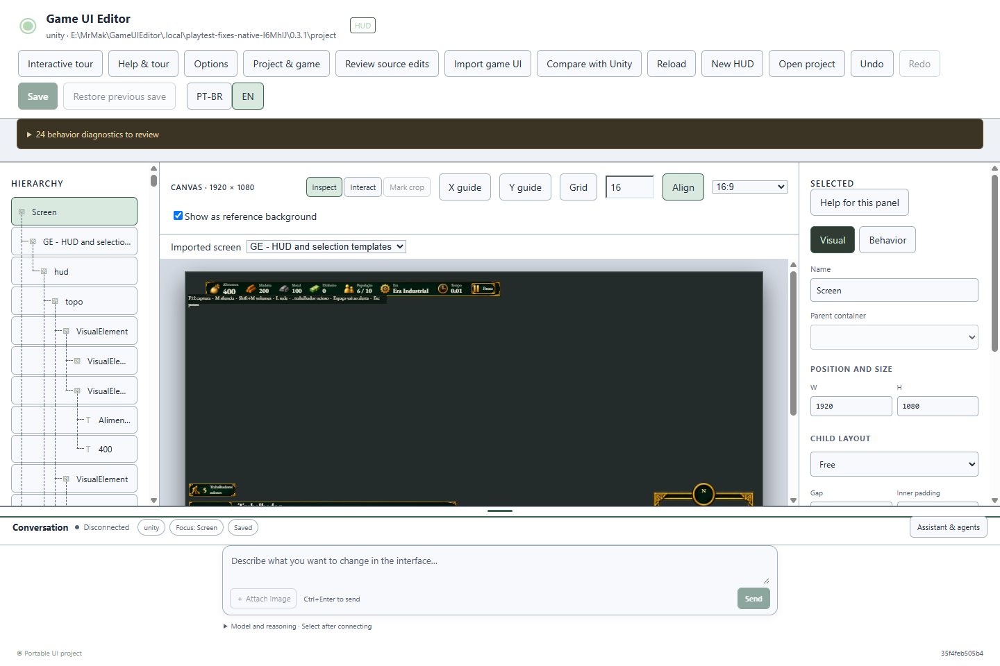
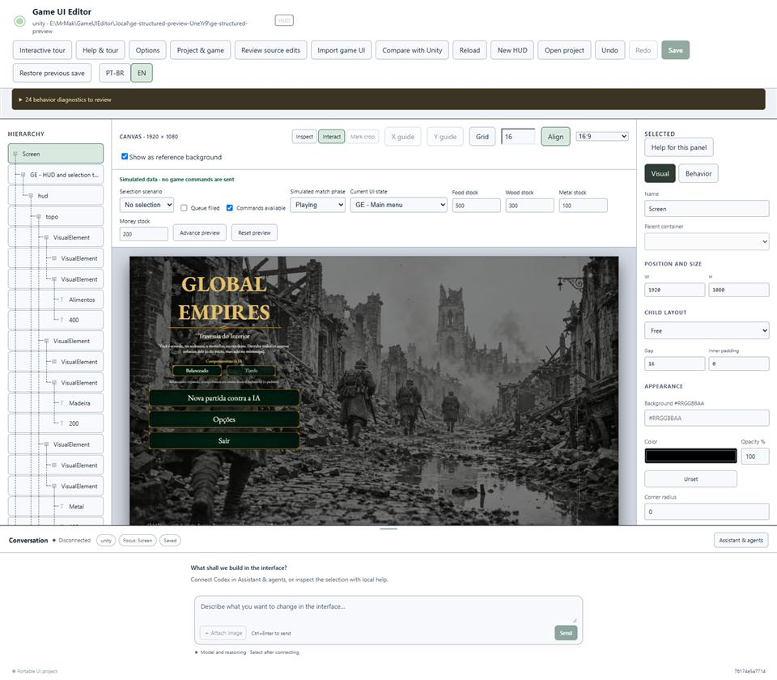
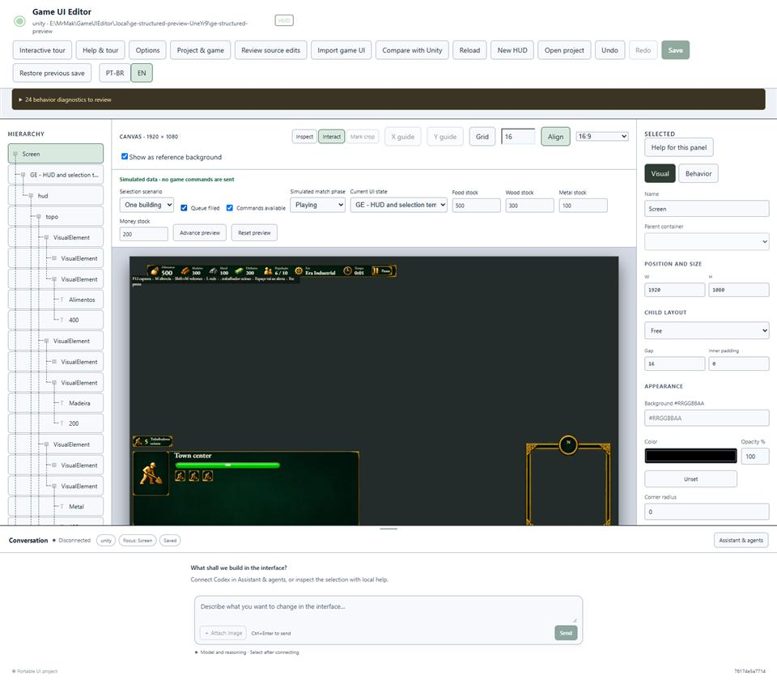
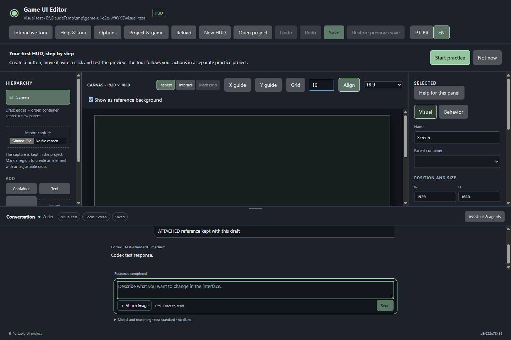

Gerado — não edite à mão · fonte: painel.json · 20 de outubro de 2026
Painel
Game UI Editor
Windows HUD authoring. Owner accepted 0.3.3; native persistent UXML/uGUI property round-trip verified. Procedural GE integration and M4/M6 acceptance remain open. Atualizado em 20 de outubro de 2026.
0.3.3 · reteste geral aprovadoRevisão atual4 de 4 itens
Lote anterior18/18
Marcos4/6
Interface focada30 verificações
Progresso do marco
4 de 4 itensFase atual: Importação estrutural · 0.3.3
- Correções pós-testefeita
- Revisão de uso · 0.2.1feita
- Novo chat · 0.2.2feita
- Importação estrutural · 0.3.3atual
- Conectores adicionais — adiadosfutura
Agora
- Importar HUDs e telas existentesUnity UI Toolkit/uGUI/prefabs, artes originais, estados, templates de seleção/fila e reimportação com conflitos. Piloto GE: seis telas e 430 nós; cobertura parcial declarada.
- Hierarquia recolhível por ramoSeta à direita em cada item com filhos, incluindo a raiz. Estados aninhados, seleção, arraste e documento preservados; 16 verificações focadas de interface aprovadas.
- Canvas inteiro, sem scroll até o péEnquadramento pela largura e altura livres, chat no rodapé e comandos preservados. Trinta verificações focadas e 16 combinações na amostra Windows aprovadas; mesmos dados de teste.
- Unity property round-trip verifiedFour persistent properties in UXML, a uGUI scene and a prefab; native reopen, reimport, callback preservation and stale-review refusal passed. Three focused conflict tests passed.
Com você
- Reteste aprovadoOwner: “testado e funcionando”. General acceptance of the delivered 0.3.3 adjustments. Supported persistent properties now have separate native technical proof; Windows interaction and full M4/M6 acceptance remain open.
- Primeiro login realO fluxo novo foi verificado por protocolo com peer de teste; um login novo pelo navegador ainda precisa ser observado, sem deslogar a conta atual automaticamente.
- Cobertura parcial e aceiteThe native property writer passed its isolated fixture. Procedural GE HUD application, dynamic commands and complete M4/M6 acceptance remain separate.
Últimas imagens







